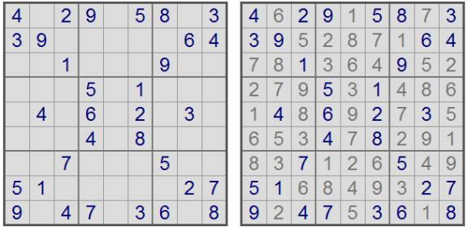

Problem G
Creating Sudoku puzzles
Input File: Standard Input
Output: Standard Output
Sudoku is an addictive puzzle game that recently has become very
popular. Given a 9x9 grid, the task is to fill all empty squares with
the digits 1 to 9, so that every row, every column, and every 3x3
box contains the digits 1 through 9 exactly once. Some of the
squares already have digits in them, and these must not be changed. A Sudoku
puzzle always have one unique solution. The figure below to the left is an
example of a Sudoku puzzle, and the figure to the right its solution.

Now, I wouldn't want to spoil the fun of solving a Sudoku puzzle "manually" by asking you to write a program to solve an arbitrary Sudoku puzzle. Instead, you're asked to write a program which assists Sudoku puzzle designers. One way to construct new Sudoku puzzles is to make them aesthetically appealing by letting the fixed digits have nice patterns. The difficulty lies in making sure there is only one solution to the puzzle you have created. This is where a computer program can help.
Your task is, given a incomplete Sudoku puzzle (meaning that it probably has more than one solution), complete the puzzle by adding digits to the empty squares so that a puzzle with a unique solution is created. No unnecessary digits may be added. That is, if you would remove any of the added digits, a (invalid) puzzle with multiple solutions should appear. Note that this does not mean that you have to create a puzzle by adding the fewest numbers of digits (which is a much harder task).
The first line in the input
contains the number of test cases (at most 25). Each case consists of 9 lines,
each line containing 9 characters. These lines make up the (incomplete) Sudoku
puzzle. A dot ('.') is used to mark empty squares. Test cases are separated
with a blank line.
For each test case, output 9
lines in the same format as the input describing a Sudoku puzzle based on the
input grid, satisfying the constraints above. Separate the test cases with a
blank line. Any valid solution will be accepted.
24.29.58.339.....6...1...9.....5.1....4.6........4.8.........5..51.....279.47.36.8 123......456......789............123......456......789...123......456......789...
|
4.29.58.339.....64..1...9.....5.1....4.6.2.3....4.8.....7...5..51.....279.47.36.8 123......4568...3.789..1.....5...1233....2456......789...123......456....4.789...
|
Problem
setter: Jimmy Mårdell
Special Thanks:
Derek Kisman